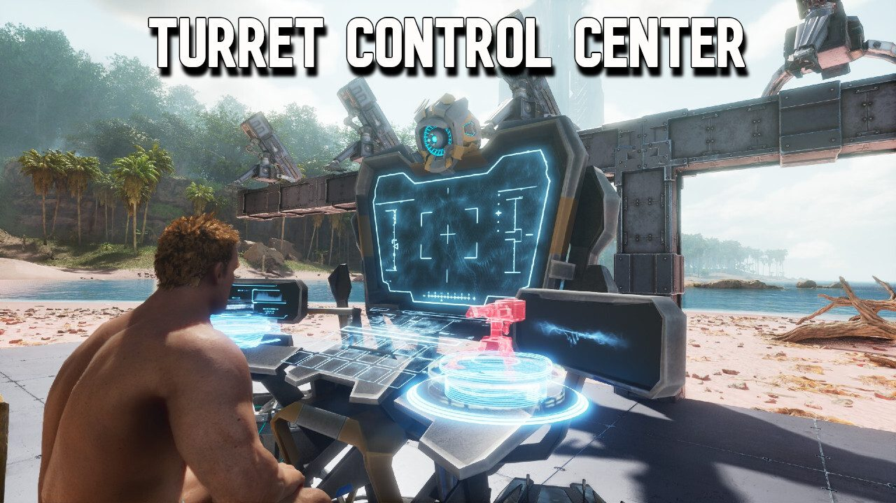
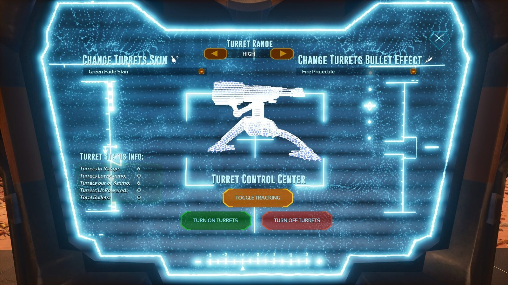
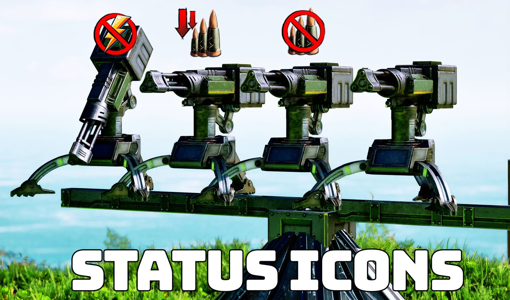
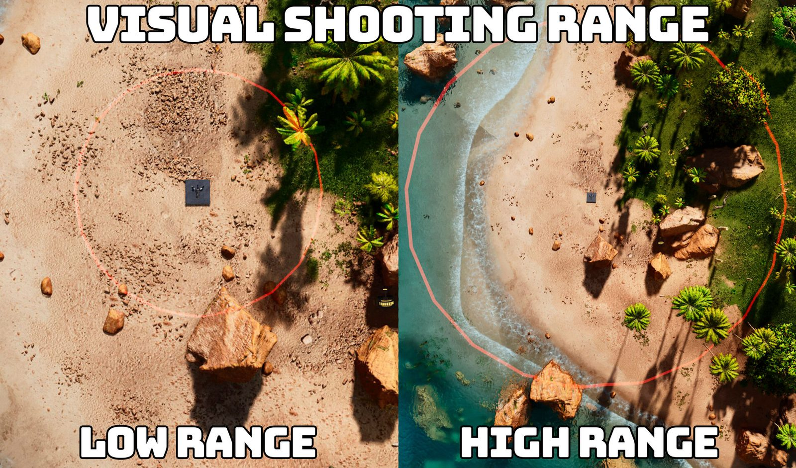
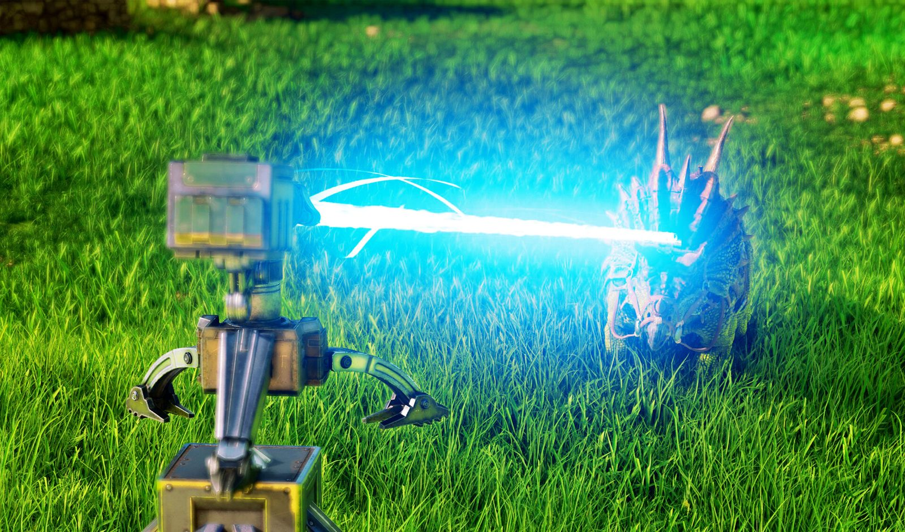
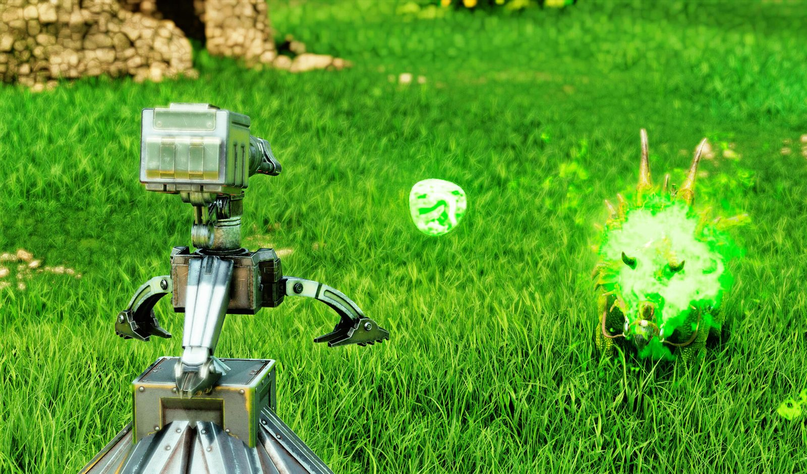
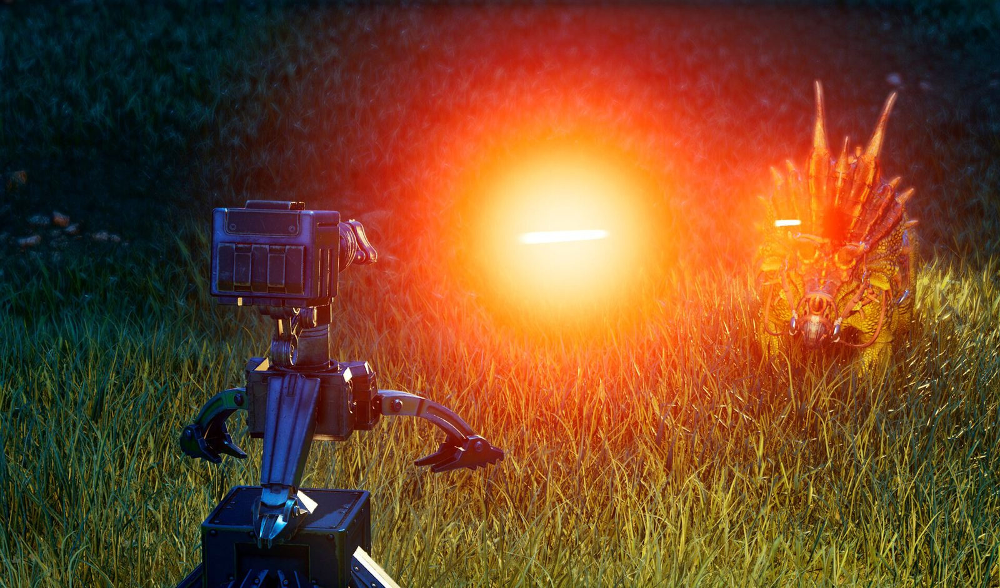
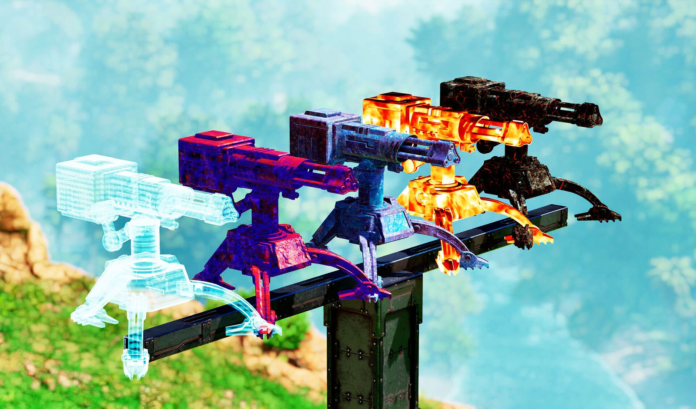

The turret management ARK always needed: track every turret through walls, read its status at a glance and control them all from one networked terminal. La gestión de torretas que ARK siempre necesitó: seguir cada torreta a través de las paredes, ver su estado de un vistazo y controlarlas todas desde una terminal en red.
Turret Utilities is a premium mod for ARK: Survival Ascended, released through Studio Wildcard and CurseForge's official paid-mod program and made together with Nexxuz World, the biggest Spanish-speaking ARK creator.
Turret Utilities es un mod premium para ARK: Survival Ascended, publicado en el programa oficial de mods pagos de Studio Wildcard y CurseForge, y hecho en conjunto con Nexxuz World, el creador de ARK más grande de habla hispana.
Turrets are the backbone of every base in ARK, but the base game gives you almost no way to manage them. The mod fixes that with live tracking, status icons and a completely new piece of equipment: the Turret Control Center.
Las torretas son la base de la defensa en ARK, pero el juego casi no da forma de gestionarlas. El mod lo resuelve con seguimiento en vivo, íconos de estado y un equipo completamente nuevo: el Turret Control Center.
I was the lead programmer: every system in the mod was designed and implemented by me in Blueprints.
Fui el programador principal: todos los sistemas del mod los diseñé y programé yo en Blueprints.
Every turret in range shows its position through walls, up to a configurable maximum distance.
Cada torreta en rango muestra su posición a través de las paredes, hasta una distancia máxima configurable.
Low ammo, no ammo or no power: problems are visible at a glance instead of discovered during a raid.
Poca munición, sin munición o sin energía: los problemas se ven de un vistazo en lugar de descubrirlos durante un ataque.
A new placeable terminal with a simulated screen UI and a live 3D render of the turret. Turn turrets on and off, split ammo between them, change skins and projectile effects and read stats for every turret around.
Una terminal nueva con una interfaz simulada en pantalla y un render 3D en vivo de la torreta. Prender y apagar torretas, repartir munición, cambiar skins y efectos de disparo, y ver la información de todas las que hay alrededor.
Every action from the terminal is replicated to all players on the server, for any number of turrets.
Cada acción desde la terminal se replica a todos los jugadores del servidor, para cualquier cantidad de torretas.
Each turret can display its real firing radius, so placing a defense stops being guesswork.
Cada torreta puede mostrar su radio de disparo real, así ubicar una defensa deja de ser a ojo.
Tracer rounds, lasers, electric and poison projectiles, plus cosmetic turret skins.
Balas trazadoras, láser, proyectiles eléctricos y venenosos, y skins cosméticas para las torretas.
The hardest part was performance at scale. Bases in ARK can have dozens of turrets in range, and the tracking system has to keep checking all of them without hurting the frame rate. I designed the update loop over the turret array to stay stable even in the heaviest bases.
Lo más difícil fue el rendimiento a gran escala. Las bases de ARK pueden tener decenas de torretas en rango, y el sistema de seguimiento tiene que revisarlas todas sin afectar los FPS. Diseñé el ciclo de actualización sobre el array de torretas para que se mantenga estable incluso en las bases más pesadas.
The second challenge was replication: a change made from the control terminal has to reach every affected turret and every player on the server, consistently and without flooding the network.
El segundo desafío fue la replicación: un cambio hecho desde la terminal tiene que llegar a cada torreta afectada y a cada jugador del servidor, de forma consistente y sin saturar la red.







ARK: Survival Ascended is a trademark of Studio Wildcard. Mod made with the official ARK Dev Kit. ARK: Survival Ascended es una marca de Studio Wildcard. Mod hecho con el ARK Dev Kit oficial.